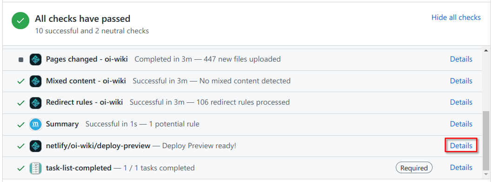

OI Wiki · prijevod · UvodOI Wiki · translation · Introduction
Kako sudjelovatiHow to contribute
Sadržaj
Prije početka članka, svi članovi projektnog tima OI Wiki srdačno vas pozdravljaju i pozivaju da doprinesete stranicama ovog projekta. Upravo zahvaljujući stotinama ljudi poput vas OI Wiki postao je ono što je danas!
Ovaj članak uglavnom opisuje postupak pisanja pri sudjelovanju u izradi OI Wikija. Prije pisanja ili ispravljanja wiki stranica pažljivo pročitajte sljedeći tekst kako biste pripremili što kvalitetniji sadržaj.
Smjernice za doprinos
Prije uređivanja pročitajte Smjernice za doprinos OI Wikiju i smjernice projekta kako biste lakše surađivali i komunicirali s drugim doprinositeljima iz zajednice.
Suradnja
Upozorenje
Prije nego što počnete pisati neki sadržaj, pregledajte Issues, provjerite da nitko već ne radi isto te otvorite novi issue u kojem ćete zabilježiti što namjeravate napisati.
Savjet
Među issueima ima mnogo problema koje treba ispraviti ili riješiti, osobito u našem planu iteracije (Iteration Plan). Odabir zadatka odande odličan je početak!
Kako bismo osigurali stručnost i točnost članaka, preporučujemo da prije uređivanja razmotrite sljedeće:
- Odaberite područje koje poznajete: dajte prednost člancima povezanima s vašim stručnim znanjem, obrazovanjem ili interesima. Tako ćete lakše napisati kvalitetan sadržaj.
- Budite oprezni s novim područjima: ako tek počinjete učiti o nekoj temi ili je slabo poznajete, preporučujemo da prvo produbite razumijevanje čitanjem i učenjem, a uređivati počnete tek kada ste dovoljno sigurni u znanje.
- Proučite relevantne izvore: pri dodavanju ili izmjeni sadržaja preporučujemo da najprije proučite mjerodavnu literaturu i izvore kako biste osigurali točnost informacija. Slobodno postavite pitanja u komentarima na stranici ili u našoj zajednici i raspravite ih s drugim urednicima.
Cijenimo entuzijazam i trud svakog doprinositelja te razumijemo da nemaju svi jednaku razinu stručnosti. Surađujmo i zajedno njegujmo ovo mjesto znanja, pomažući većem broju čitatelja točnim i stručnim sadržajem. Veselimo se vašem doprinosu! Ovdje ćemo citirati Wikipediju:
Ne bojte se uređivati, odvažno ažurirajte stranice!1
Uređivanje na GitHubu
Za sudjelovanje u pisanju OI Wikija potreban je GitHub račun (možete ga otvoriti na GitHubovoj stranici za registraciju), ali nisu potrebne napredne vještine rada s GitHubom. Čak i kao početnik možete izvrsno urediti sadržaj slijedeći postupak u nastavku.
Savjet
Dok se vaše promjene ne spoje u glavni repozitorij OI Wikija, nijedna vaša izmjena sadržaja neće se pojaviti na glavnoj stranici OI Wikija. Stoga se ne morate brinuti da ćete pokvariti sadržaj koji se trenutačno prikazuje na OI Wikiju.
Ako ste i dalje zabrinuti, možete proučiti službene GitHubove vodiče.
Uređivanje sadržaja jedne stranice
- Pronađite odgovarajuću stranicu na OI Wikiju;
- kliknite gumb „Uredi ovu stranicu” (edit) u gornjem desnom kutu sadržaja (lijevo od sadržaja članka). Nakon potvrde da ste pročitali ovu stranicu i Priručnik za oblikovanje, kliknite gumb i slijedite upute za prelazak na GitHub radi uređivanja;
- u okviru za uređivanje napišite željene izmjene. Tijekom uređivanja i slanja promjena isključite softver za automatsko prevođenje jer može uzrokovati nepotrebne probleme (primjerice, katkad pogrešno preimenuje datoteku koju uređujete i tako naruši strukturu direktorija);
- nakon pisanja pomaknite se na dno stranice i unesite commit poruku prema odjeljku Pravila oblikovanja commit poruka, a zatim kliknite Propose changes kako biste poslali izmjene. GitHub će automatski stvoriti vaš fork repozitorija OI Wiki i dodati mu vaš commit.
- GitHub će automatski otvoriti stranicu vašeg forka. Pri vrhu stranice pojavit će se zeleni gumb Create pull request. Kliknite ga kako biste otvorili stranicu za stvaranje pull requesta. Pomaknite se dolje, provjerite da u izmjenama nema pogrešaka, unesite opis prema odjeljku Pravila oblikovanja pull requestova, a zatim kliknite zeleni gumb Create pull request kako biste stvorili pull request.
- Ako sve prođe kako treba, vaš je pull request uspješno poslan u repozitorij. Preostaje pričekati da ga administratori pregledaju i spoje u glavni repozitorij.
Dok čekate spajanje, možete komentirati tuđe pull requestove ili glasati za njih ili protiv njih. Ako stignu nove poruke, u gornjem desnom kutu stranice pojavit će se obavijest, a dobit ćete i obavijest e-poštom (ovisno o načinu obavještavanja u osobnim postavkama).
Uređivanje sadržaja više stranica
Ako istodobno trebate urediti više međusobno nepovezanih stranica, slijedite prethodni odjeljak Uređivanje sadržaja jedne stranice i uredite sve stranice u jednom prolazu.
- Otvorite repozitorij OI-Wiki/OI-Wiki, pritisnite tipku . (ili zamijenite
github.comu URL-u sgithub.dev)2 kako biste otvorili GitHubov web-uređivač VS Code; - u uređivaču izmijenite izvorne datoteke stranica. Gumbom za pregled u gornjem desnom kutu (ili prečacem Ctrl+KV) možete otvoriti pregled s desne strane;
- nakon izmjena otvorite karticu Source Control s lijeve strane, unesite commit poruku prema odjeljku Pravila oblikovanja commit poruka i napravite commit. Kad vas sustav upita želite li stvoriti fork repozitorija, kliknite zeleni gumb Fork Repository.
- Nakon commita pri vrhu stranice u sredini pojavit će se dijaloški okvir. U prvi okvir unesite naslov, a u drugi naziv grane odredišnog repozitorija. Zatim će se u donjem desnom kutu pojaviti obavijest poput
Created Pull Request #1 for OI-Wiki/OI-Wiki.. Klikom na plavu poveznicu možete otvoriti taj pull request.
Dodavanje izmjena pull requestu
- Otvorite popis pull requestova OI Wikija, pronađite svoj pull request i kliknite ga.
- Ispod naslova pull requesta vidjet ćete tekst poput
<vašID> wants to merge x commits into OI-wiki:master from <vašID>:patch-1. Kliknite dio<vašID>:patch-1. - Bit ćete preusmjereni na svoj fork, a naziv grane u gornjem lijevom kutu popisa datoteka bit će naziv grane iz koje ste poslali pull request (u ovom primjeru
patch-1). - Napravite potrebne izmjene.
- Ako trebate urediti jednu datoteku ili više međusobno nepovezanih stranica, pronađite željenu datoteku i izmijenite je. Zatim se pomaknite na dno stranice, unesite commit poruku prema odjeljku Pravila oblikovanja commit poruka i kliknite Commit changes kako biste poslali izmjene.
- Ako trebate urediti više datoteka, pritisnite . (ili zamijenite
github.comu URL-u sgithub.dev)2 kako biste otvorili GitHubov web-uređivač VS Code i napravili izmjene. Zatim na kartici Source Control s lijeve strane unesite commit poruku prema odjeljku Pravila oblikovanja commit poruka i napravite commit.
- Vaše će se izmjene automatski dodati pull requestu.
Lokalno uređivanje Gitom
Upozorenje
Većini korisnika preporučujemo uređivanje u GitHubovu web-uređivaču opisanom gore.
Iako u većini slučajeva možete uređivati izravno na GitHubu, za posebne slučajeve (primjerice kada trebate potpisivanje GPG-om) preporučujemo lokalno uređivanje Gitom.
Okvirni je postupak sljedeći:
- napravite fork glavnog repozitorija na svojem računu;
- klonirajte (clone) svoj fork lokalno;
- napravite lokalne izmjene i zabilježite ih commitom;
- pošaljite (push) izmjene u fork koji ste klonirali;
- pošaljite pull request glavnom repozitoriju.
Detaljne upute možete pronaći na stranici Git.
Dodavanje izmjena pull requestu
Nastavite uređivati u lokalno kloniranom forku, napravite commit i pošaljite ga naredbom push. Izmjene će se automatski dodati pull requestu.
Pregled izmjena na izgrađenoj web-stranici
Pri dnu stranice pull requesta možete pronaći testnu stranicu. Kliknite poveznicu Details uz stavku netlify/oi-wiki/deploy-preview (kao na slici ispod) kako biste otvorili automatski izgrađen pregled stranice s vašim izmjenama.

Promjene navigacije i poveznica
Ako želite dodati novu stranicu ili promijeniti poveznicu na postojeću stranicu u navigaciji, obično trebate izmijeniti datoteku mkdocs.yml.
Pri dodavanju nove stranice slijedite postojeći oblik. Međutim, osim pri preustroju ili ispravljanju naziva, ne preporučujemo mijenjanje poveznica na postojeće stranice. Nepotrebne izmjene u pull requestovima bit će odbijene.
Ako ipak želite promijeniti poveznicu, ažurirajte polje author i datoteku preusmjeravanja.
Polje author
GitHub API ne može pratiti statistiku nakon promjene putanje datoteke, pa radi toga ručno održavamo popis autora na početku datoteke. Polje author nalazi se na samom početku Markdown datoteke i izgleda poput author: Ir1d, cjsoft; susjedni ID-jevi odvojeni su zarezom i razmakom. ID je korisničko ime na GitHubu, odnosno dio adrese GitHub profila (primjerice Ir1d u https://github.com/Ir1d).
Pri promjeni poveznice unesite sve doprinositelje trenutačne stranice u polje author.
Datoteka preusmjeravanja
Pri promjeni poveznica potrebno je izmijeniti datoteku preusmjeravanja kako vanjske poveznice na stranicu ne bi prestale raditi.
Datoteka _redirects služi za generiranje konfiguracije Netlifyja i datoteka za preusmjeravanje.
Svaki redak predstavlja jedno pravilo preusmjeravanja: početni i odredišni URL (bez naziva domene):
/path/to/src /path/to/desc
Napomena: sva su preusmjeravanja tipa 301. Izmjene su potrebne samo kada promjene URL-ova u navigaciji uzrokuju neispravne poveznice.
Pravila oblikovanja commit poruka
Pri pisanju commit poruke slijedite ova osnovna pravila:
- u sažetku kratko opišite promjene iz tog commita. Sažetak ne smije biti dulji od 50 znakova; višak će se automatski premjestiti u tijelo poruke.
- Ako sadržaj commita treba dodatno opisati, učinite to detaljno u tijelu poruke.
Za sažetak commita preporučuje se sljedeći oblik:
<vrsta promjene>(<naziv datoteke>): <opis promjene>
Vrste promjena dijele se ovako:
feat: dodavanje sadržaja.fix: ispravljanje pogrešaka u postojećem sadržaju.refactor: preustroj stranice (veće izmjene).revert: poništavanje prethodnih izmjena.
Pravila oblikovanja pull requestova
Za pull requestove slijedite ova pravila:
- u naslovu jasno navedite svrhu PR-a (što je napravljeno, koji je problem ispravljen).
- U opisu ukratko navedite izmjene. Ako rješavate neki issue, dodajte
fix #xxxx, gdje jexxxxbroj issuea. - Pažljivo pročitajte Smjernice za doprinos i Kodeks ponašanja. Ako se slažete s njima, označite kućice u predlošku PR-a kako biste potvrdili pristanak.
Za naslov pull requesta preporučuje se sljedeći oblik:
<vrsta promjene>(<naziv datoteke>): <opis promjene> (<broj odgovarajućeg issuea>)
Vrste promjena dijele se ovako:
feat: dodavanje sadržaja.fix: ispravljanje pogrešaka u postojećem sadržaju.refactor: preustroj stranice (veće izmjene).revert: poništavanje prethodnih izmjena.
Primjeri:
fix(ds/persistent-seg): jasniji opis u komentarima kodafix: tools/judger/index nedostaje u navigaciji (#3709)feat(math/poly/fft): better proofrefactor(ds/stack): sređivanje sadržaja stranice
Tijek suradnje
- Nakon primitka novog pull requesta GitHub šalje e-poruku recenzentima;
- istodobno se na GitHub Actionsu i Netlifyju pokreću dvije skupine testova, čiji se napredak prikazuje pri dnu stranice PR-a. GitHub Actions uglavnom provjerava da promjene u PR-u ne ometaju izgradnju web-stranice; Netlify gradi pregled izmjena iz PR-a radi lakšeg pregleda (nakon testova kliknite Details za više informacija);
- recenzenti mogu pronaći probleme i ostaviti
reviewilisuggested changes(predložene izmjene, prikazane sivom ikonom) /requested changes(obvezne izmjene, prikazane crvenom ikonom, dostupne samo recenzentima s pravom pisanja u repozitorij). Obično će priložiti prijedloge i potrebne izmjene pa ćete trebati dodati nove promjene pull requestu. Postupak je opisan pod „Dodavanje izmjena pull requestu” u odjeljcima „Uređivanje na GitHubu” i „Lokalno uređivanje Gitom”. - Tek kada dovoljno recenzenata odobri PR, on se može spojiti u granu master;
- nakon spajanja u master GitHub Actions ponovno gradi sadržaj web-stranice i ažurira granu gh-pages;
- tek tada poslužitelj preuzima izmjene iz grane gh-pages i ponovno objavljuje najnoviju verziju sadržaja.
Literatura i napomene
Contents
Before this article begins, every member of the OI Wiki project team warmly welcomes you to contribute pages to this project. It is thanks to hundreds of people like you that OI Wiki has become what it is today!
This article mainly describes the writing process for contributing to OI Wiki. Before writing or correcting wiki pages, please read the following carefully to help you produce higher-quality content.
Contribution guidelines
Before editing, read the OI Wiki contribution guidelines and project guidelines to collaborate and communicate more effectively with community contributors.
Collaboration
Warning
Before starting to write a piece of content, check the Issues, confirm that nobody is already doing the same work, and open a new issue describing the content you plan to write.
Tip
There are also many problems to fix or resolve among the issues, especially in our Iteration Plan. Picking a task from there is a great place to start!
To ensure that articles are accurate and well informed, we recommend considering the following before editing:
- Choose an area you know: prioritize articles related to your expertise, educational background, or interests. This helps you create high-quality content.
- Approach new areas cautiously: if you are a beginner in a topic or do not know it well, deepen your understanding through reading and learning first, and only start editing when you feel reasonably confident.
- Consult relevant sources: when adding or revising content, consult authoritative literature and sources first to ensure accuracy. You are also welcome to ask questions in the page comments or our community and discuss them with other editors.
We value every contributor's enthusiasm and effort, and understand that everyone's level of expertise differs. Let us work together to care for this haven of knowledge and help more readers with accurate, informed content. We look forward to your contributions! To quote Wikipedia:
Do not be afraid to edit; be bold in updating pages!1
Editing on GitHub
Contributing to OI Wiki requires a GitHub account (you can register on GitHub's signup page), but does not require advanced GitHub skills. Even a beginner can do an excellent job of editing by following the steps below.
Tip
Until your changes are merged into the main OI Wiki repository, none of your edits will appear on the main OI Wiki website, so you do not need to worry about breaking the content currently displayed on OI Wiki.
If you are still unsure, see GitHub's official tutorials.
Editing the content of a single page
- Find the corresponding page on OI Wiki;
- click the "Edit this page" (edit) button at the top right of the article (to the left of the table of contents). After confirming that you have read this page and the Style guide, click the button and follow the prompts to edit on GitHub;
- write your changes in the editor. When editing and subsequently submitting changes, turn off your automatic translation software, since it can cause unnecessary problems (for example, it may incorrectly rename a file you are editing and disrupt the directory structure);
- when you finish writing, scroll to the bottom of the page and enter a commit message following the Commit message format section, then click Propose changes to submit your changes. GitHub will automatically create a fork of the OI Wiki repository for you and add your commit to it.
- GitHub will automatically open your fork's page. A green Create pull request button will appear at the top. Click it to open the pull request creation page. Scroll down and check your changes for mistakes, write the pull request description according to the Pull request format section, and click the green Create pull request button to create the pull request.
- If all goes well, your pull request has been submitted successfully. Wait for the administrators to review it and merge it into the main repository.
While waiting for the merge, you can comment on, upvote, or downvote other people's pull requests. New messages will generate a notification in the upper-right corner of the page, along with an email notification (depending on the notification settings in your personal preferences).
Editing the content of multiple pages
If you need to edit several unrelated pages at the same time, follow the Editing the content of a single page section above and modify all the pages in one go.
- Open the OI-Wiki/OI-Wiki repository and press . (or replace
github.comin the URL withgithub.dev)2 to enter GitHub's web-based VS Code editor; - edit the source files in the editor. Use the preview button at the top right (or the Ctrl+KV shortcut) to open a preview on the right;
- after editing, use the Source Control tab on the left, enter a commit message following the Commit message format section, and commit. When asked whether to create a fork of this repository, click the green Fork Repository button.
- After committing, a dialog will appear at the top center of the page. Enter a title in the first dialog and the destination branch name in the second. A notification such as
Created Pull Request #1 for OI-Wiki/OI-Wiki.will then appear in the lower-right corner. Click the blue link to view that pull request.
Adding changes to a pull request
- Open the OI Wiki pull request list, find your pull request, and click it.
- Below the pull request title, you will see text such as
<yourID> wants to merge x commits into OI-wiki:master from <yourID>:patch-1. Click the<yourID>:patch-1part. - You should be redirected to your fork, with the branch name at the top left of the file list set to the branch from which you submitted the pull request (
patch-1in this example). - Make the changes you need.
- To edit a single file or several unrelated pages, find the file and make your changes. Then scroll to the bottom, enter a commit message following the Commit message format section, and click Commit changes to submit them.
- To edit multiple files, press . (or replace
github.comin the URL withgithub.dev)2 to enter GitHub's web-based VS Code editor and make your changes. Then use the Source Control tab on the left, enter a commit message following the Commit message format section, and commit the changes.
- Your changes will automatically be added to your pull request.
Editing locally with Git
Warning
For most users, we recommend the GitHub web editor described above.
Although you can edit directly on GitHub in most cases, we recommend editing locally with Git in special situations, such as when GPG signatures are required.
The general workflow is:
- fork the main repository to your account;
- clone your fork locally;
- make local changes and commit them;
- push the changes to the fork you cloned;
- submit a pull request to the main repository.
For detailed instructions, see the Git page.
Adding changes to a pull request
Continue making changes in your locally cloned fork, then commit and push them. Your changes will automatically be added to the pull request.
Previewing changes on the built website
You can find the test page near the bottom of the pull request page. Click the Details link for netlify/oi-wiki/deploy-preview (as shown below) to open an automatically built preview of the page with your changes.
Changes to navigation and links
Usually, to add a new page or change an existing page's link in the navigation, you need to modify mkdocs.yml.
Follow the existing format when adding a page. However, unless you are restructuring or correcting terminology, we do not recommend changing links to existing pages. Unnecessary changes in pull requests will be rejected.
If you insist on changing a link, remember to update the author field and the redirects file.
The author field
The GitHub API cannot track statistics after a file's path changes, so we manually maintain an author list at the start of the file to address this. The author field appears at the very beginning of the Markdown file, in a form such as author: Ir1d, cjsoft, with adjacent IDs separated by a comma and a space. An ID is a GitHub username, the relevant part of a GitHub profile URL (for example, Ir1d in https://github.com/Ir1d).
When changing a link, add all of the current page's contributors to the author field.
The redirects file
When changing links, update the redirects file to prevent external references from becoming dead links.
The _redirects file is used to generate the Netlify configuration and redirect files.
Each line specifies a redirect rule, giving the source and destination URLs (without the domain name):
/path/to/src /path/to/desc
Note: all redirects are 301 redirects. Changes are only necessary when URL changes in the navigation cause dead links.
Commit message format
Follow these basic requirements when writing a commit message:
- briefly describe the changes in the commit summary. Keep the summary within 50 characters; any excess will automatically be placed in the body.
- If more explanation is needed, describe the commit in detail in the body.
The recommended format for a commit summary is:
<change type>(<file name>): <description of changes>
Change types are as follows:
feat: adding content.fix: correcting errors in existing content.refactor: restructuring a page (large-scale changes).revert: reverting earlier changes.
Pull request format
Follow these requirements for pull requests:
- clearly state the PR's purpose in the title (what work was done, which problem was fixed).
- Briefly describe the changes in the body. If the PR fixes an issue, add
fix #xxxx, wherexxxxis the issue number. - Carefully read the contribution guidelines and code of conduct. If you agree, check the boxes in the PR template to confirm your agreement.
The recommended format for a pull request title is:
<change type>(<file name>): <description of changes> (<corresponding issue number>)
Change types are as follows:
feat: adding content.fix: correcting errors in existing content.refactor: restructuring a page (large-scale changes).revert: reverting earlier changes.
Examples:
fix(ds/persistent-seg): clarify descriptions in code commentsfix: tools/judger/index is missing from the navigation (#3709)feat(math/poly/fft): better proofrefactor(ds/stack): organize page content
Collaboration workflow
- When a new pull request is received, GitHub emails the reviewers;
- at the same time, two sets of tests run on GitHub Actions and Netlify, with progress shown at the bottom of the PR page. GitHub Actions mainly checks that the PR's changes do not disrupt the website build; Netlify builds a preview of the changes for reviewers (click Details after the tests finish for more information);
- reviewers may find problems and submit a
review,suggested changes(shown with a gray icon), orrequested changes(mandatory changes, shown with a red icon and available only to reviewers with write access to the repository). Reviewers usually include suggestions and required changes, so you will need to add further changes to the pull request. See "Adding changes to a pull request" under "Editing on GitHub" or "Editing locally with Git" for instructions. - Only after enough reviewers approve a PR can it be merged into the master branch;
- after merging into master, GitHub Actions rebuilds the website content and updates the gh-pages branch;
- only then does the server fetch the updates from gh-pages and redeploy the latest content.